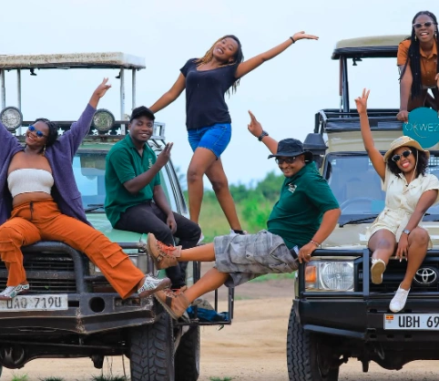
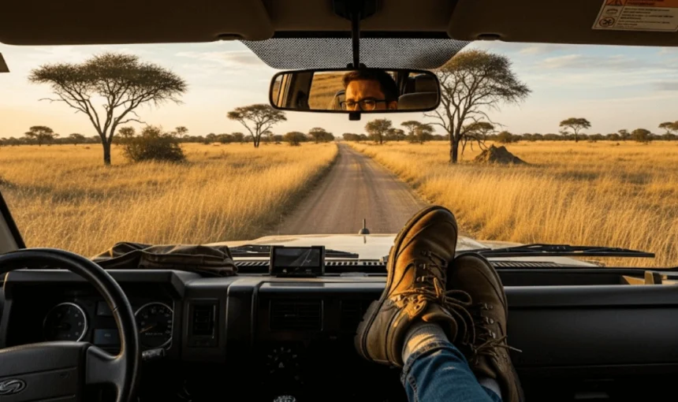
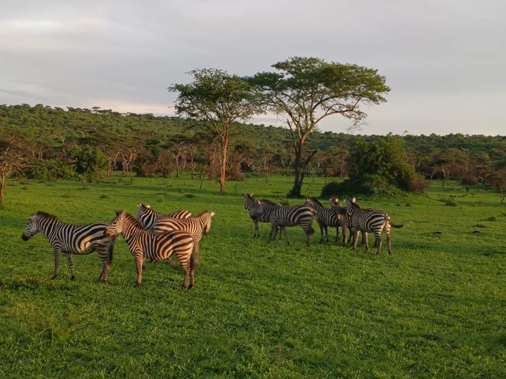
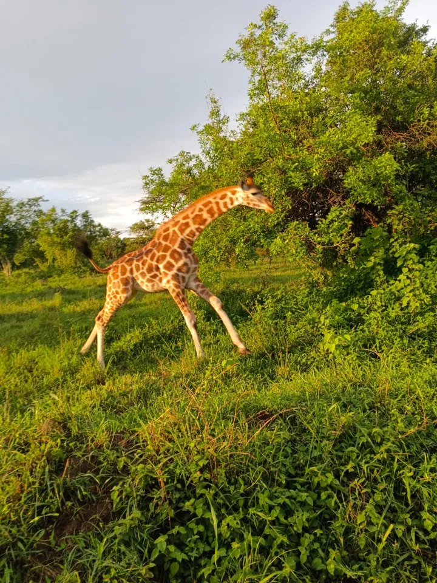
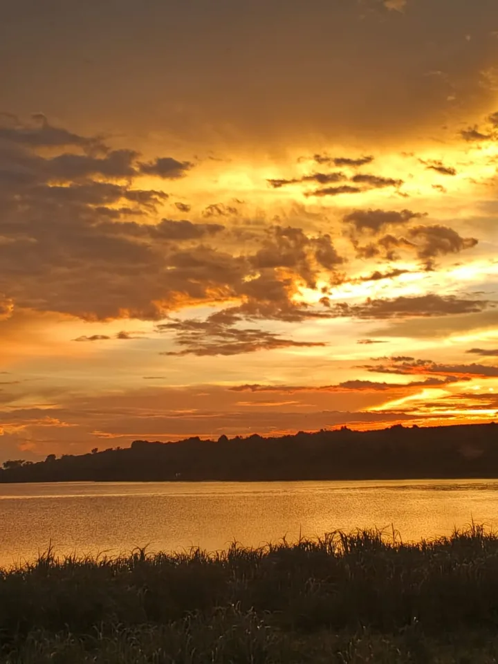

Bwindi & Mgahinga
Forest encounters, permit planning and lodge options, tailored to your journey.
View TripUganda & Rwanda · Tailor-made journeys
Gorilla encounters, wildlife safaris and journeys planned around you. Explore with a local team, from your first airport pickup to your last unforgettable view.
Your dates. Your pace. Our local knowledge.
Extraordinary places.
Personal experiences.
Your next adventure
Find your adventure
A few favourite ways to experience Uganda. Every itinerary can be shaped around your dates and interests.
Explore all safari packagesForest encounters, permit planning and lodge options, tailored to your journey.
View TripTailor-made quotations · Availability confirmed before booking

Local knowledge. Personal care.Travel with confidence
Since 2011, Augur has helped travellers and organisations explore East and Central Africa. We bring your safari, accommodation and transport together into one practical plan.
Choose your interests, pace and preferred comfort level.
Support for routes, permits, stays and airport transfers.
Discuss your itinerary and inclusions before confirming.
Beyond the safari
Arrivals, stays and everyday journeys — coordinated with the same local care.

A smooth start from Entebbe to your hotel or onward destination.
Transport for private trips, teams, meetings and events.
Accommodation options matched to your route and preferences.
Connect your Uganda safari with more of East Africa.
Through our eyes
Quiet encounters and extraordinary light from our travel collection.



Safari, in motion
There is a rhythm to life on safari. Watch elephants browse the bush and a family move through the tall grass in two short films from our journeys.
Previews play silently. Use the video controls for sound or full screen.
Plan your own safariElephants browsing · 33 seconds
An elephant family · 16 seconds
Ideas for the journey
Useful planning advice, field stories and conservation updates from Uganda.
Start with your dates, favourite experiences and the questions to ask before booking.
Read the guideWhy habitat, timing, quiet observation, and a knowledgeable guide shape a better birding day.
Read field noteFollow Uganda’s new rhino chapter, while still planning guided tracking at Ziwa.
Read updateYour journey starts here
Share your dates and ideas. We’ll help you shape the next step.